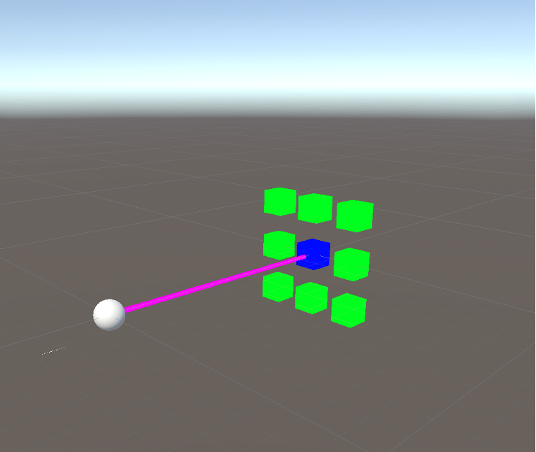

SURF Eye Tracker
A VR-based eye-tracking interface for intuitive teleoperation, where gaze data is used to infer user intent and guide a robot toward a target location in a shared control setting.
Gallery

Project details
Overview
The project explored a new way to assist users with severe motor disabilities by combining eye gaze intent recognition with a robot planning pipeline. The goal was to create an intuitive interface where a user could direct a mobile robot to a target in the scene without needing low-level steering commands.
My contribution
I developed and evaluated a VR eye-tracking interface using Meta Quest Pro capabilities, explored integration strategies for live camera data and gaze estimation, and studied how gaze signals could be used to identify user intent for higher-level mobile robot control.
Tools and methods
The project combined eye tracking, VR development, and robot navigation research. I evaluated native VR approaches and Unity-based implementations, and worked toward integrating the gaze interface with a motion planner that could interpret the user’s intended target as an input to robot control.